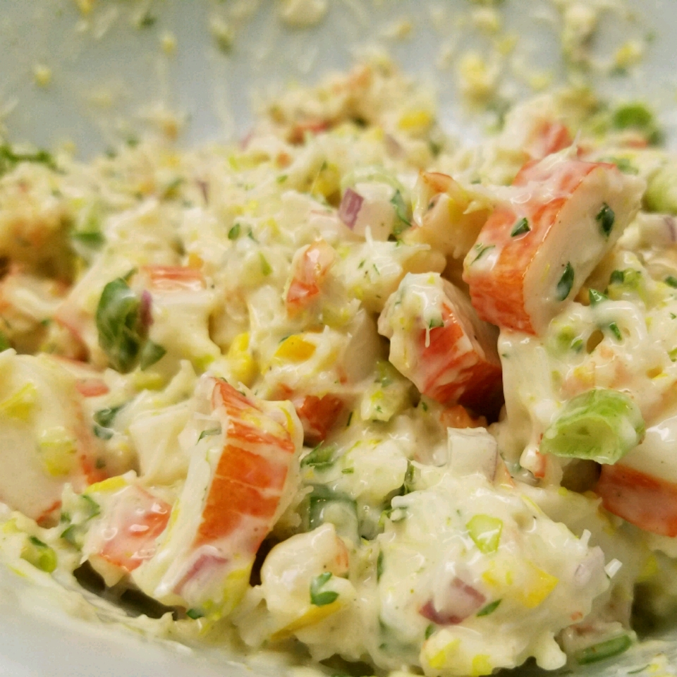

Crab Salad

Description
Mmmmm!Yummy! You always wanted to make crab salad for your family? What
are you waiting for?
Ingredients
- 1 pound imitation crab meat, flaked
- ½ cup finely chopped celery, or more to taste
-
½ cup reduced-fat ranch dressing (such as Hidden Valley Ranch® LIght)
- ⅓ cup mayonnaise (such as Hellmann's®/Best Foods®)
- 1 tablespoon white sugar
- 1 teaspoon minced fresh parsley
Steps
-
Gently mix flaked imitation crab, celery, ranch dressing, mayonnaise,
sugar, and parsley in a salad bowl until thoroughly combined.
Refrigerate overnight, stirring occasionally. Stir again just before
serving.